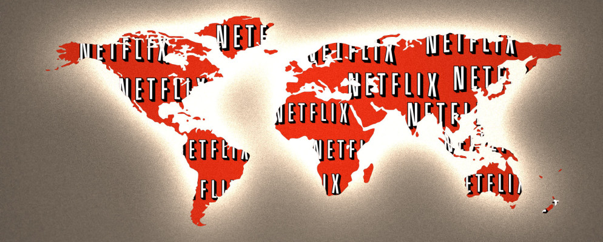

電影和影集獨家授權合約
Netflix 目前和數家公司簽訂獨家授權合約。獨播合約除了遵守傳統電視合約的架構之外，也賦予 Netflix 串流獨家授權。截至 2014 年,Netflix 美國影音資料庫中的電影包括相對論傳媒（Relativity Media）與其附屬的羅格影業（Rogue Pictures）、夢工廠動畫（DreamWorks Animation）、 開路影業 （Open Road Films）、FilmDistrict、溫斯坦影業（The Weinstein Company）、索尼動畫（Sony Pictures Animation）和華特迪士尼影業集團（Walt Disney Studios）近期推出的作品,。
其他向 Netflix 提供授權影音內容的經銷商包括華納兄弟（Warner Bros）、環球影業（Universal Pictures）、索尼影業（Sony Pictures Entertainment）、二十世紀福斯影片公司（20th Century Fox）和華特迪士尼影業集團。Netflix 還持有 Disney ABC 電視集團（Disney–ABC Television Group）、夢工廠經典（DreamWorks Classics）、Kino International、華納兄弟、二十世紀福斯和哥倫比亞廣播公司電視發行部（CBS Television Distribution）發行的電視節目之部分授權，以及孩之寶工作室（Hasbro Studios）, 塞班娛樂（Saban Brands）, Funimation 和碧日傳媒（ Viz Media）等公司發行之作品。在此以前，Netflix 也擁有選擇 NBC 環球電視發行公司（NBCUniversal Television Distribution）和索尼影業發行的電視節目之權利。Netflix 過去也持有在電影重製發行商標準收藏（The Criterion Collection）的作品中選擇的權利, 但這些作品已經從 Netflix 被轉移至 Hulu 的資料庫。